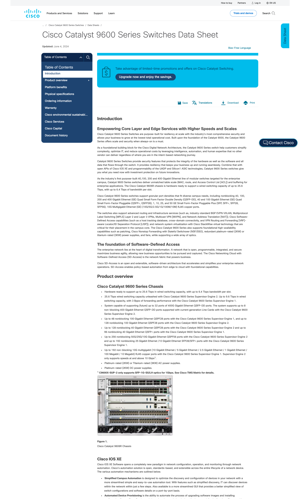
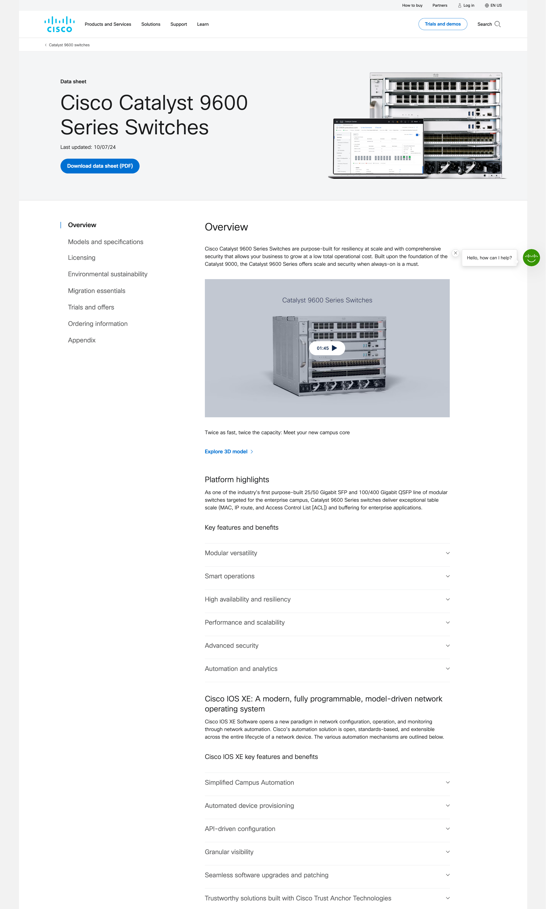

Data sheets provide detailed technical specifications, features, and benefits, helping potential customers and partners understand product capabilities and applications. They inform industry standards and regulatory requirements for global shipping.
They are essential tools for the sales and marketing teams, enabling them to present key information effectively to prospective clients and inform decision-making. They highlight the unique selling points of cisco's offerings, differentiating them from competitors and showcasing the company's innovations and solutions.
Before
After

The pilot program A/B test on the updated design
outperformed the legacy design by +31%
on the question:
Did you find the information you needed?
Feedback showed the highest positive sentiments ever captured by the customer experience team in moderated user testing.
This phase was crucial for identifying the strengths and weaknesses of existing datasheets and for setting a clear direction for the redesign project.
I led an in-depth review of the top 10 competitors. This analysis provided valuable insights into what users encounter when evaluating options, highlighting industry standards and best practices.

We analyzed the top 150 datasheets. Lack of consistency marred the experience.
How often the sections are found in our top datasheets:
To ensure our decisions were data-driven, I had the data team create a detailed dashboard in Adobe Analytics to identify the most frequently accessed datasheets and monitor the success of the redesign project.
Remove most marketing and non-relevant information and overhaul information architecture.
Use data as a guide; landing directly on datasheets is a primary way customers access these assets.
Integrate relevant promotions and trial offers in a customer-friendly way based on past experiments.
Recommend organizational changes to ensure consistent authoring, brand tone and visuals.
Highlight key benefits and features.
Prepared datasheets for future GenAI tools and optimized for Google AI results by collaborating with the SEO tagging team to support key information in the code.
Prioritize features and benefits based on research and customer feedback to meet user needs and drive sales.
Ensure datasheets effectively communicate the company’s competitive advantages and unique selling points.
Competitive advantages and unique selling points are displayed prominently in a larger font to highlight these aspects on the first page.
Many of Cisco's customers have corporate social responsibility (CSR) goals to reduce their carbon footprint and champion sustainability. I created a new pattern and worked with the design system team to ensure we promoted Energy Star, Titanium, and other awards and certifications that were not previously customer-facing.
Balancing resource constraints, I aimed to use developed patterns for the pilot. Enhancements to the jump links pattern, including subcategories for quick information access, were prioritized for development to improve the user experience.
Cisco products are well designed, and the new imagery enforces the high quality of their products. Customers are more likely to proceed with a purchase when they can view the product in detail, especially in a market that involves complex technology.
Understanding the importance of technical clarity, the new designs include detailed technical drawings. This addition provides technical users a clear understanding of product specifications and differentiators, further enhancing their confidence in our offerings.
Being on the Sustainability global messaging team allowed me to see the connection between datasheets and their ability to educate and inform customers about the tangible advantages of adopting sustainability. Using Applicable information as well as high-level company goals and vision to express
By highlighting energy-efficient technologies, usage metrics, and environmental benefits, these datasheets can serve as powerful tools to educate and inform customers about the tangible advantages of adopting sustainable solutions as well as meeting government regulations. Incorporating energy management static and later interactive data into datasheets is a pivotal step in promoting the sustainable features and products that Cisco offers.
The new datasheets offered multiple opportunities for lead generation and nurturing. Users of datasheets arrive from direct search and attract multiple personas from a company, giving them tremendous potential to drive conversions. Previously, marketing ran a promotion on some datasheets that was very successful.
Learning from their success, I ensured strategic placement of trials and promotions instead of only placing a promo at the top of the datasheet. Enhanced promotions and better management were suggested to the Martech team to ensure a smooth customer experience and successful demand generation. I communicated the long-term vision and quality benchmarks, ensuring alignment across teams.
{kind=link}